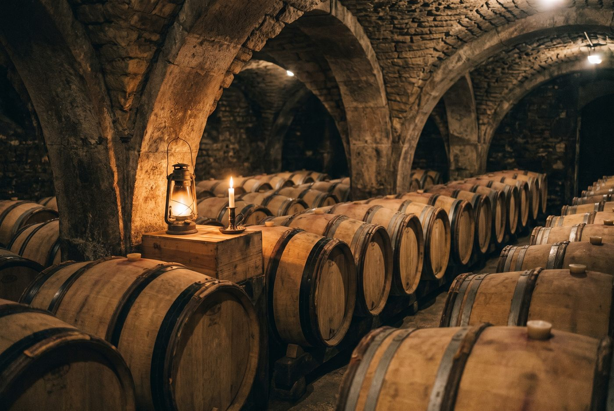

Les domaines · Côte de Nuits · Morey-Saint-Denis
07
Morey-Saint-Denis · Côte de Nuits
Domaine Robert Groffier
Chambolle-Musigny dans toute sa sensualité, entre parfum floral, fruit éclatant et texture soyeuse.

Ambiance de Morey-Saint-Denis
Constitué dans les années 1950 par Jules Groffier, le domaine s'étend sur un peu moins de 8 hectares, avec son cœur à Chambolle-Musigny où la famille est le plus grand propriétaire privé des Amoureuses. Nicolas Groffier, quatrième génération, signe les vins depuis le millésime 2004 en adaptant la part de vendange entière et de bois neuf à chaque année. Depuis 2022, plusieurs parcelles sont vinifiées séparément pour isoler l'expression de chaque sol.
Rouges
- Cépage · Pinot noirParcelle d'environ 0,42 ha de vignes plus que centenaires, élevée le plus souvent en fût neuf.
- Cépage · Pinot noirHaut de la parcelle du Clos de Bèze, vinifié à part sous l'appellation Chambertin depuis 2022.
- Cépage · Pinot noirPrès d'un hectare de vieilles vignes, avec une cuvée séparée Les Terres Blanches depuis 2022.
- Cépage · Pinot noirEnviron un hectare, la plus grande propriété privée du climat, désormais scindé en deux cuvées selon le sol, argiles et sables.
- Cépage · Pinot noirUn hectare de vignes d'environ 80 ans, première parcelle vendangée chaque année.
- Cépage · Pinot noirPremier cru situé juste sous Bonnes-Mares, à la limite de Morey-Saint-Denis.
- Cépage · Pinot noirLieu-dit de Gevrey-Chambertin, élevé avec une faible proportion de bois neuf.
- Cépage · Pinot noir
Ces cuvées vous parlent ?
Demander les disponibilités